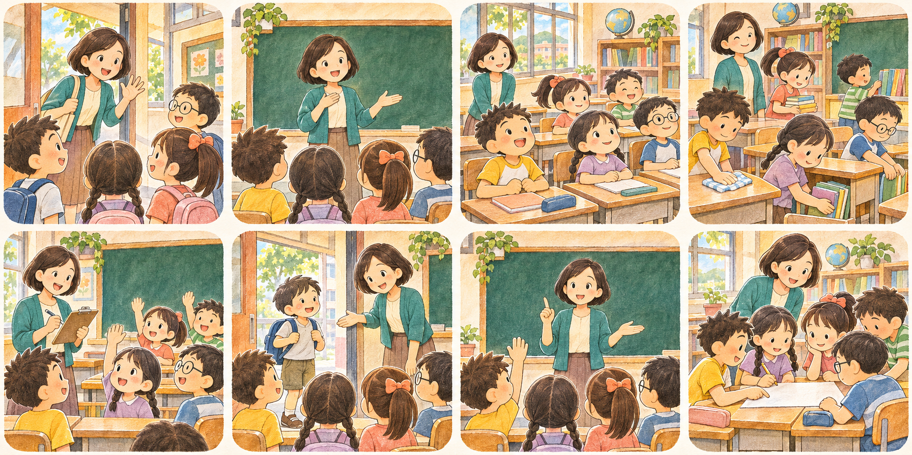

CLASSROOM LANGUAGE TOOL
雙語教師小幫手
點選圖卡找到教室指令；點選句子，讓學生同時看見大字與聽見英文。

請從下方選擇一句課堂短語
Choose a phrase below.
語音設定
自訂短語
變更會儲存在此瀏覽器。
CLASSROOM LANGUAGE TOOL
點選圖卡找到教室指令；點選句子，讓學生同時看見大字與聽見英文。

請從下方選擇一句課堂短語
Choose a phrase below.
變更會儲存在此瀏覽器。
CLASSROOM COMMAND
按 Esc 或「縮小顯示」回到短語工具